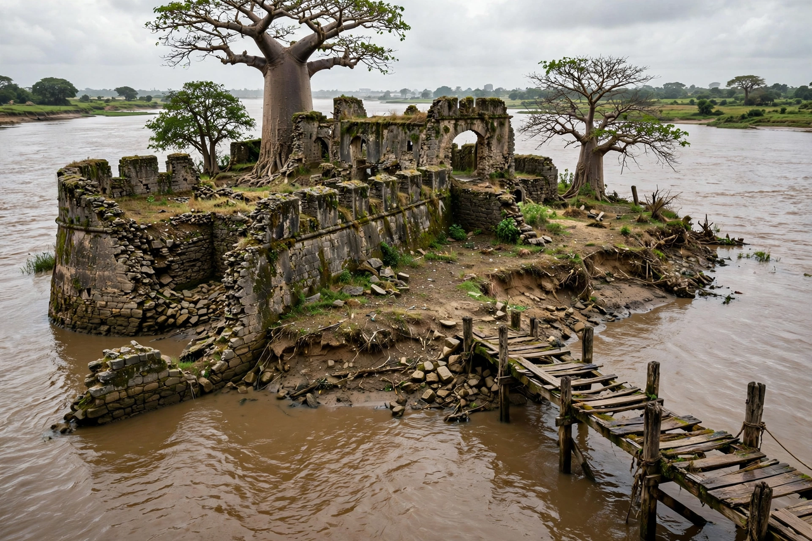

From Wikipedia, the free encyclopedia
James Island, renamed Kunta Kinteh Island in 2011, is an island in the Gambia River, about 30 kilometres from the river's mouth, in the Republic of The Gambia. It contains the ruins of Fort James, a trading post used successively by Courlanders, Dutch, English, and French traders, and is notorious for its role in the transatlantic slave trade. The island and related sites were inscribed on the UNESCO World Heritage List in 2003.

Baltic German settlers from the Duchy of Courland built the first fort on the island in 1651, naming it Fort Jacob. After passing through Dutch hands, the English seized it in 1661 and renamed it Fort James, after James, Duke of York (later James II). The fort changed hands repeatedly during Anglo-French wars and was destroyed and rebuilt several times. As a base of the Royal Adventurers and later the Royal African Company, the island served as a holding point for enslaved Africans before their shipment across the Atlantic.
The island gained worldwide fame through Alex Haley's 1976 novel Roots and the subsequent television series, which traced his ancestor Kunta Kinte — captured and held at the island before being shipped to America — prompting the 2011 renaming. Severe erosion has shrunk the island to a fraction of its historical size, threatening the surviving ruins, which include the fort's bastions, gun batteries, and a slave house.
See also: Dawda Kairaba Jawara · The Gambia · Atlantic slave trade · Roots